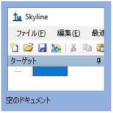

Skylineターゲット質量分析環境では、質量分析計のrawデータをSkylineドキュメントにインポートし、情報を視覚的に表示します。本来プロテオミクス用に開発されたSkylineですが、一般の低分子でも作業できるように拡張されています。Skylineを利用したさまざまなタイプのデータ解析（SRM、PRM、MS1フィルタ、DIAなど）のチュートリアルも多数用意されています。本チュートリアルは、Skylineを使用してタンパク以外の分子をターゲットとする場合の違いに焦点を当てます。
本チュートリアルでは、メチオニン経路化合物のグループのSRMアッセイを構築します。
Skylineは、ターゲット定量的質量分析研究のためのメーカーに依存しないプラットフォームの提供を目指しており、Agilent、Bruker、SCIEX、Shimadzu、Thermo-Scientific、および Watersの各メーカーの装置からrawデータをインポートできます。さまざまな装置プラットフォームからデータをインポートすることで、再現可能なメソッドの普及、研究室間の技術の移転、装置間の比較および複数の大型施設間での共同研究や比較が非常に容易になります。プロテオミクスの分野で何年もできていたことが、一般的な分子をターゲットとしてSkylineを使用しても同じように利用できます。。
チュートリアルを始める前に、以下のzipファイルをダウンロードしてください。
https://skyline.ms/tutorials/SmallMolecule_3_6.zip
この中のファイルを、以下のコンピュータ上のフォルダに解凍します。
C:\Users\bspratt\Documents
これにより以下の新しいフォルダが作成されます。
C:\Users\bspratt\Documents\SmallMolecule
フォルダには、このチュートリアルに必要なすべてのファイルが含まれています。
本チュートリアルを始める前にSkylineを使用していた場合には、Skylineをデフォルト設定に戻すことをお勧めします。デフォルト設定に戻すには、以下の操作を行います。

Skylineのこのインスタンスのドキュメント設定がデフォルトにリセットされました。
このチュートリアルは低分子に関するものであるため、以下のようにして分子用インターフェイスを選択できます。
Skylineは、Skylineウィンドウの右上隅の分子アイコン  で表示される分子モードで動作しています。元のプロテオミクスメニューやコントロールが表示されなくなり、低分子の分析に集中できます。
で表示される分子モードで動作しています。元のプロテオミクスメニューやコントロールが表示されなくなり、低分子の分析に集中できます。
分子トランジションリストをSkylineドキュメントに取り込む最も簡単な方法は、空のドキュメントから始めて、[ 編集 ] > [ 挿入 ] > [ トランジションリスト ] メニュー項目を利用することです。
Skylineでは、最低でも各プリカーサーとプロダクトイオンの電荷状態と、イオン組成式またはm/zが既知である必要があります。トランジションリストにプロダクトイオンの情報がない場合は、プリカーサーターゲットのリストであると推定されます。プロダクト情報が異なるプリカーサー情報が繰り返される場合は、ペプチドの場合と同様、単一プリカーサーからの複数トランジションを示すものと認識されます。
プロテオミクス用途では、Skylineはプロトン付加によるイオン化を問題なく推定できます。そのため、電荷ペプチドの記述に必要とされるものは、その配列および電荷状態だけです。しかし、一般の低分子の場合はナトリウム獲得、水素損失など、さまざまな方法でイオン化が起こり得ます。Skylineでは、http://fiehnlab.ucdavis.edu/staff/kind/Metabolomics/MS-Adduct-Calculator/に記載されたスタイルで付加物を記述し、イオン化モードを例えば「[M+Na]」、「[M-2H]」、「[2M+ACN+H]」のように指定できます。
付加物の記述法を用いて、分子が同位体で標識されていることを示すことができます。たとえば、付加物「[M3Cl374H2-Na]」は、分子の3個のCl原子が37Clで置換され、4個のH原子が重水素で置換され、分子がナトリウム損失によってイオン化されていることを示します。
組成が分からない分子については、付加物で質量シフトを示すことができます。たとえば、「[M(-1.23)+H]」は、変化していない場合よりも分子の質量が1.23 AMU軽く、分子は水素獲得によってイオン化されることを示します。
どのようにイオン化するかがわからない分子の場合は、付加物が電荷のみを示すことがあります。たとえば、「[M+3]」は電荷状態3を示します。m/z値は分子質量の1/3となります。プリカーサーでもプロダクトでも、トランジションリストを完全にm/z値で記述することはできますが、化学式がなければSkylineは同位体分布を提供できません。したがって、中性分子と付加物の説明の両方の化学式があることが望ましいです。
非プロテオミクス分子をターゲットとするSkylineドキュメントの作成を開始するには、以下の操作を行います。
以下の値が表示されます。
| Molecule List Name | Precursor Name | Precursor Formula | Precursor Adduct | Precursor Charge | Precursor RT | Precursor CE | Product m/z | Product Charge | Label |
| Amino Acid | Methionine | C5H11NO2S | [M+H] | 1 | 2.5 | 15 | 104.07 | 1 | |
| Amino Acid | Methionine | C5H8H'3NO2S | [M+H] | 1 | 2.5 | 15 | 107.09 | 1 | heavy |
| Amino Acid | Isoleucine | C6H13NO2 | [M+H] | 1 | 2.9 | 15 | 86.096 | 1 | |
| Amino Acid | Leucine | C6H13NO2 | [M+H] | 1 | 3 | 15 | 86.096 | 1 | |
| Amino Acid | Leucine | C6H10H'3NO2 | [M+H] | 1 | 3 | 15 | 89.1 | 1 | heavy |
| Amino Acid | Phenylalanine | C9H11NO2 | [M+H] | 1 | 3.1 | 15 | 120.08 | 1 | |
| Amino Acid | Phenylalanine | C9H11NO2 | [M6C13+H] | 1 | 3.1 | 15 | 126.11 | 1 | heavy |
| Amino Acid | Arginine | C6H14N4O2 | [M+H] | 1 | 2.01 | 15 | 116.07 | 1 | |
| Amino Acid | Arginine | C1C'5H14N4O2 | [M+H] | 1 | 2.01 | 15 | 121.11 | 1 | heavy |
| Amino Acid | Ornithine | C5H12N2O2 | [M+H] | 1 | 0.85 | 15 | 70.07 | 1 | |
| Amino Acid | Ornithine | C5H12N2O2 | [M+H] | 1 | 0.85 | 15 | 116.07 | 1 | |
| Amino Acid | Ornithine | C5H10H'2N2O2 | [M+H] | 1 | 0.85 | 15 | 72.07 | 1 | heavy |
| Amino Acid | Ornithine | C5H10H'2N2O2 | [M+H] | 1 | 0.85 | 15 | 118.07 | 1 | heavy |
| Organic Acid | creatine | C4H9N3O2 | [M+H] | 1 | 1.1 | 15 | 90.06 | 1 | |
| Organic Acid | creatine | C4H6H'3N3O2 | [M+H] | 1 | 1.1 | 15 | 93.06 | 1 | heavy |
| 5'-methylthioadenosine | MTA | C11H15N5O3S | [M+H] | 1 | 3.4 | 15 | 136.1 | 1 | |
| 5'-methylthioadenosine | MTA | C11H12H'3N5O3S | [M+H] | 1 | 3.4 | 15 | 136.1 | 1 | heavy |
| S-adenosyl methionine | SAM | C15H22N6O5S | [M+H] | 1 | 2.9 | 15 | 250.11 | 1 | |
| S-Adenosyl homocysteine | SAH | C14H20N6O5S | [M+H] | 1 | 2.9 | 15 | 136.08 | 1 | |
| Polyamine | Spermidine | C7H19N3[M+H] | 1 | 3.3 | 15 | 129.15 | 1 | ||
| Polyamine | Spermine | C10H26N4 | [M+H] | 1 | 3.5 | 15 | 112.112 | 1 |
Skylineが以下のような [ トランジションリストの挿入 ] フォームを表示します。

Skyline に[トランジションリストのインポート：列の識別 ] フォームが次のように表示されます。

各列にはドロップダウンコントロールがあり、列のタイプを指定できます。この場合、Skylineは必要な列すべてを正しく同定しています。
この例では、メチオニンとd3-メチオニンのように非標識体と標識体のペアがあります。トランジションリストでは、これがC5H11NO2S [M+H]およびC5H8H'3NO2S [M+H]として記述されていますが、付加物の記述法を使用すると、これはC5H11NO2S [M+H]およびC5H11NO2S [M3H2+H]とも記述できます。フェニルアラニンの非標識体と標識体のペアでもこの例があります。式は同じですが、標識体の付加物の記述は6個の炭素がC13で置換されていると指示しています。プリカーサー付加物列はオプションであることに注意してください。スペルミジンの例にあるように、付加物はイオン組成の一部として与えられることもあります。また、プリカーサー電荷列は実質的に不要であることにも注意してください。電荷状態は、付加物の記述から推定できます。標識タイプ列も厳密には不要です。ヘビー標識はプリカーサーイオン組成や付加物から推定できます。
| 注：ファイル > インポート > トランジションリストのメニュー項目を使用すると、ファイルを開いて内容をコピーして貼り付けることなくファイルを直接インポートできます。 |
これでSkylineウィンドウは以下のようになります。

この時点で、装置メソッド、プリカーサー単離リスト（PRM用）、またはトランジションリスト（SRM用）のいずれかをエクスポート可能です。この手順の実行方法の詳細については、ターゲットメソッドの編集、既存の定量実験、またはターゲットMS/MS（PRM）チュートリアルをご覧ください。
本チュートリアルでは、Skylineからエクスポートしたメソッドで、Waters Xevo TQSを用いて取得したrawデータをインポートしてみましょう。これを今行うには、以下の操作を行います。
[ 結果ファイルをインポート ] フォームは以下のようになります。

当該ファイルは、特定のアミノ酸欠乏条件下のがん細胞株の代謝物の抽出です。アミノ酸メチオニン、アルギニン、または両方を3時間欠乏させたものと対照（すべてのアミノ酸）とを比較しています。1
ファイル名と条件：
ID15739_01_WAA263_3976_020415 – Double Blank
ID15740_01_WAA263_3976_020415 – Extraction Blank (contains SIL standards)
ID15740_02_WAA263_3976_020415 – Extraction Blank (contains SIL standards)
ID15740_04_WAA263_3976_020415 – Extraction Blank (contains SIL standards)
ID15655_01_WAA263_3976_020415 – All AA Sample 1
ID15656_01_WAA263_3976_020415 – All AA Sample 2
ID15657_01_WAA263_3976_020415 – All AA Sample 3
ID15658_01_WAA263_3976_020415 – Minus Met Sample 1
ID15659_01_WAA263_3976_020415 – Minus Met Sample 2
ID15660_01_WAA263_3976_020415 – Minus Met Sample 3
ID15661_01_WAA263_3976_020415 – Minus Arg Sample 1
ID15662_01_WAA263_3976_020415 – Minus Arg Sample 2
ID15663_01_WAA263_3976_020415 – Minus Arg Sample 3
ID15664_01_WAA263_3976_020415 – Minus Arg, Minus Met Sample 1
ID15665_01_WAA263_3976_020415 – Minus Arg, Minus Met Sample 2
ID15666_01_WAA263_3976_020415 – Minus Arg, Minus Met Sample 3
ID15741_01_WAA263_3976_020415 – Pooled QC Sample 1
ID15741_02_WAA263_3976_020415 – Pooled QC Sample 2
当該ファイルは瞬時にインポートされ、Skylineウィンドウは以下のようになります。

Skyline概要グラフを利用して個別のターゲットを表示するには、以下の操作を行います。
これでSkylineウィンドウは以下のようになります。

本チュートリアルでは、Skylineドキュメントを、ターゲット分子のプリカーサーイオンの化学式および付加物、さらにプロダクトイオンのm/z値で指定して作成する方法を学びました。メタボロミクス研究者が取得した繰り返し測定データセットをインポートし、もともとはターゲットプロテオミクス用に開発されたSkylineの既存の機能の多くが、非プロテオミクス分子データにも適用できることを理解しました。
1. Tang, X. et al. Comprehensive Profiling of Amino Acid Response Uncovers Unique Methionine-Deprived Response Dependent on Intact Creatine Biosynthesis. PLoS Genet 11, e1005158 (2015).